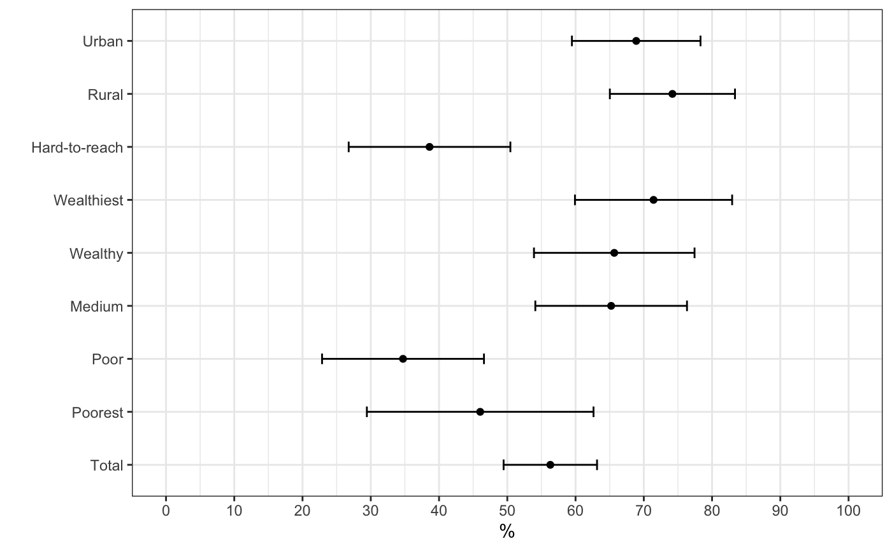

Coverage of the Myanmar MCCT programme in Kayah and Kayin state can be assessed using data from the hh and hhMembers dataset. The hh dataset contains responses by sampled households with regard to whether they were recipients of MCCT benefits along with other MCCT-specific questions. The hhMembers dataset contains information from each member of a household that can be used to determine their eligibility to receive MCCT benefits. Specifically, information on a child’s date of birth and the pregnancy status of women of reproductive age in the household.
Following the data manipulation and structuring, data recoding and data analysis workflow used in the Myanmar MCCT baseline assessment, the MCCT-related indicators for Kayah and Kayin state were produced using code presented hereafter.
Following is the code used to produce the results for MCCT coverage indicators for Kayah state.
create_mcct(df = hh, x = hhMembers) %>%
recode_mcct() %>%
create_weighted_table(vars = c("mcct1", "mcct2",
paste("mcct3", letters[1:7], sep = ""),
paste("mcct5", letters[1:4], sep = ""),
paste("mcct6", letters[1:3], sep = "")),
labs = c("MCCT coverage",
"Mean number of cash transfers received",
"Cash transfer received through mobile programme",
"Cash transfer received through wave money",
"Cash transfer received through village head/GAD",
"Cash transfer received through EHO",
"Cash transfer received through CBO",
"Cash transfer received through midwife",
"Cash transfer received through health staff",
"Cash transfer used for food",
"Cash transfer used for education",
"Cash transfer used for housing",
"Cash transfer used for clothes",
"Usage of cash transfer decided by mother",
"Usage of cash transfer decided by husband",
"Usage of cash transfer decided by other household head/member"),
state = "Kayah")This results in:
#> state strata variable indicator n
#> 1 Kayah Urban mcct1 MCCT coverage 90
#> 2 Kayah Rural mcct1 MCCT coverage 93
#> 3 Kayah Hard-to-reach mcct1 MCCT coverage 158
#> 4 Kayah Total mcct1 MCCT coverage 341
#> 5 Kayah Wealthiest mcct1 MCCT coverage 63
#> 6 Kayah Wealthy mcct1 MCCT coverage 67
#> 7 Kayah Medium mcct1 MCCT coverage 69
#> 8 Kayah Poor mcct1 MCCT coverage 72
#> 9 Kayah Poorest mcct1 MCCT coverage 63
#> 10 Kayah Urban mcct2 Mean number of cash transfers received 62
#> 11 Kayah Rural mcct2 Mean number of cash transfers received 69
#> 12 Kayah Hard-to-reach mcct2 Mean number of cash transfers received 61
#> 13 Kayah Total mcct2 Mean number of cash transfers received 192
#> 14 Kayah Wealthiest mcct2 Mean number of cash transfers received 45
#> 15 Kayah Wealthy mcct2 Mean number of cash transfers received 44
#> estimate se lcl ucl
#> 1 0.6888889 0.04806087 0.5946913 0.7830865
#> 2 0.7419355 0.04677270 0.6502627 0.8336083
#> 3 0.3860759 0.06043106 0.2676333 0.5045186
#> 4 0.5630499 0.03491988 0.4946081 0.6314916
#> 5 0.7142857 0.05874691 0.5991439 0.8294275
#> 6 0.6567164 0.06001225 0.5390946 0.7743383
#> 7 0.6521739 0.05668718 0.5410691 0.7632787
#> 8 0.3472222 0.06051633 0.2286124 0.4658320
#> 9 0.4603175 0.08471293 0.2942832 0.6263517
#> 10 2.1129032 0.12589451 1.8661545 2.3596519
#> 11 2.2028986 0.14185475 1.9248683 2.4809288
#> 12 2.0655738 0.18355457 1.7058134 2.4253341
#> 13 2.1302083 0.08725885 1.9591841 2.3012325
#> 14 2.1555556 0.10673585 1.9463571 2.3647540
#> 15 2.1363636 0.16818789 1.8067214 2.4660058The indicator results produced are in a long table format i.e. each row of data is for every single indicator and for every unit of stratification. This is the preferred format for storing indicator results data as it lends itself to any further analysis and/or plotting later on.
For example, if we wanted to plot the estimates for each strata of the MCCT coverage indicator and show the confidence interval of each estimate akin to a forest plot, we can use the following code using the output data.frame above:
create_mcct(df = hh, x = hhMembers) %>%
recode_mcct() %>%
create_weighted_table(vars = c("mcct1", "mcct2",
paste("mcct3", letters[1:7], sep = ""),
paste("mcct5", letters[1:4], sep = ""),
paste("mcct6", letters[1:3], sep = "")),
labs = c("MCCT coverage",
"Mean number of cash transfers received",
"Cash transfer received through mobile programme",
"Cash transfer received through wave money",
"Cash transfer received through village head/GAD",
"Cash transfer received through EHO",
"Cash transfer received through CBO",
"Cash transfer received through midwife",
"Cash transfer received through health staff",
"Cash transfer used for food",
"Cash transfer used for education",
"Cash transfer used for housing",
"Cash transfer used for clothes",
"Usage of cash transfer decided by mother",
"Usage of cash transfer decided by husband",
"Usage of cash transfer decided by other household head/member"),
state = "Kayah") %>%
filter(variable == "mcct1") %>%
ggplot(mapping = aes(x = estimate * 100,
y = factor(strata,
levels = c("Total", "Poorest", "Poor",
"Medium", "Wealthy", "Wealthiest",
"Hard-to-reach", "Rural",
"Urban")))) +
geom_point() +
geom_errorbarh(mapping = aes(xmin = lcl * 100, xmax = ucl * 100),
height = 0.2) +
scale_x_continuous(limits = c(0, 100), breaks = seq(from = 0, to = 100, by = 10)) +
labs(x = "%", y = "") +
theme_bw()This produces the following plot:

Following is the code used to produce the results for MCCT coverage indicators for Kayin state.
create_mcct(df = hh, x = hhMembers) %>%
recode_mcct() %>%
create_weighted_table(vars = c("mcct1", "mcct2",
paste("mcct3", letters[1:7], sep = ""),
paste("mcct5", letters[1:4], sep = ""),
paste("mcct6", letters[1:3], sep = "")),
labs = c("MCCT coverage",
"Mean number of cash transfers received",
"Cash transfer received through mobile programme",
"Cash transfer received through wave money",
"Cash transfer received through village head/GAD",
"Cash transfer received through EHO",
"Cash transfer received through CBO",
"Cash transfer received through midwife",
"Cash transfer received through health staff",
"Cash transfer used for food",
"Cash transfer used for education",
"Cash transfer used for housing",
"Cash transfer used for clothes",
"Usage of cash transfer decided by mother",
"Usage of cash transfer decided by husband",
"Usage of cash transfer decided by other household head/member"),
state = "Kayin")This results in:
#> state strata variable indicator n
#> 1 Kayin Urban mcct1 MCCT coverage 118
#> 2 Kayin Rural mcct1 MCCT coverage 92
#> 3 Kayin Hard-to-reach mcct1 MCCT coverage 108
#> 4 Kayin Total mcct1 MCCT coverage 318
#> 5 Kayin Wealthiest mcct1 MCCT coverage 61
#> 6 Kayin Wealthy mcct1 MCCT coverage 64
#> 7 Kayin Medium mcct1 MCCT coverage 65
#> 8 Kayin Poor mcct1 MCCT coverage 62
#> 9 Kayin Poorest mcct1 MCCT coverage 63
#> 10 Kayin Urban mcct2 Mean number of cash transfers received 68
#> 11 Kayin Rural mcct2 Mean number of cash transfers received 35
#> 12 Kayin Hard-to-reach mcct2 Mean number of cash transfers received 39
#> 13 Kayin Total mcct2 Mean number of cash transfers received 142
#> 14 Kayin Wealthiest mcct2 Mean number of cash transfers received 33
#> 15 Kayin Wealthy mcct2 Mean number of cash transfers received 34
#> estimate se lcl ucl
#> 1 0.5762712 0.06839488 0.4422197 0.7103227
#> 2 0.3804348 0.05122331 0.2800389 0.4808306
#> 3 0.3611111 0.04623991 0.2704826 0.4517397
#> 4 0.4465409 0.03358027 0.3807248 0.5123570
#> 5 0.5409836 0.08911482 0.3663218 0.7156455
#> 6 0.5312500 0.05631727 0.4208702 0.6416298
#> 7 0.5230769 0.06918975 0.3874675 0.6586863
#> 8 0.3225806 0.05874915 0.2074344 0.4377269
#> 9 0.3015873 0.06130946 0.1814230 0.4217516
#> 10 2.5000000 0.15006126 2.2058853 2.7941147
#> 11 1.8571429 0.14742508 1.5681950 2.1460907
#> 12 1.8461538 0.19773665 1.4585971 2.2337106
#> 13 2.1619718 0.11529506 1.9359977 2.3879460
#> 14 2.5757576 0.13041497 2.3201489 2.8313662
#> 15 2.3529412 0.19957004 1.9617911 2.7440913